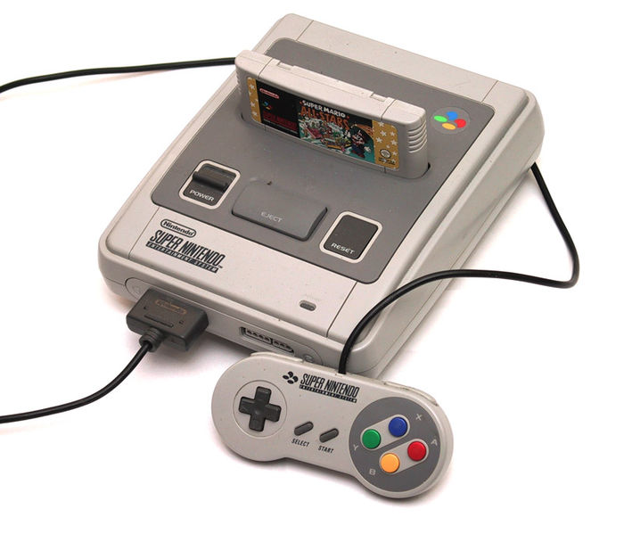

Nintendo SuperNes, 1990
CPU:
Ricoh 5A22 (65c816)
Frequência: 3,58 MHz
RAM: 128 KB
VRAM: 64 KB
Cores: 512 (3:3:3 RGB)
Resoluções:
256x224p
512x224p
512x448i
Unidades vendidas: 49,1 milhões
Jogo mais vendido: Super Mario World (20 milhões)